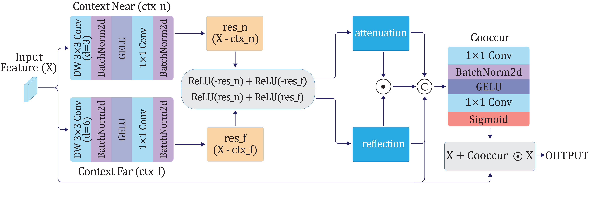
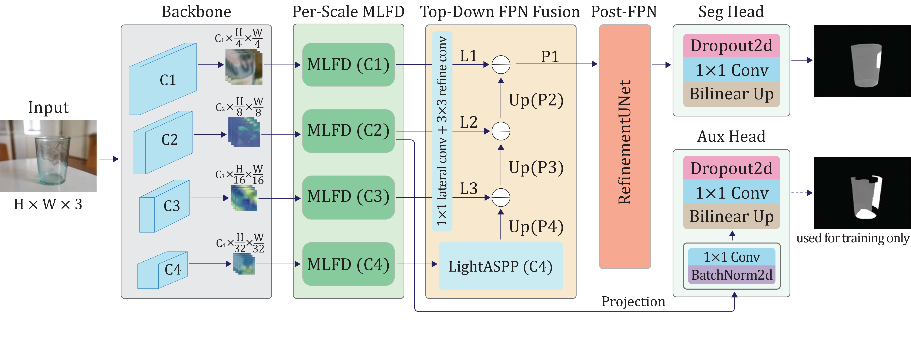
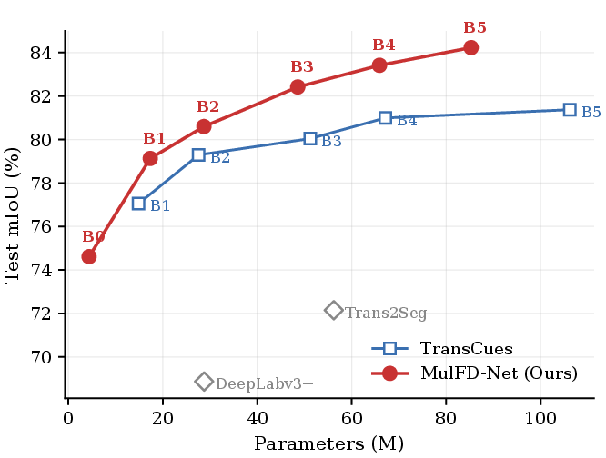
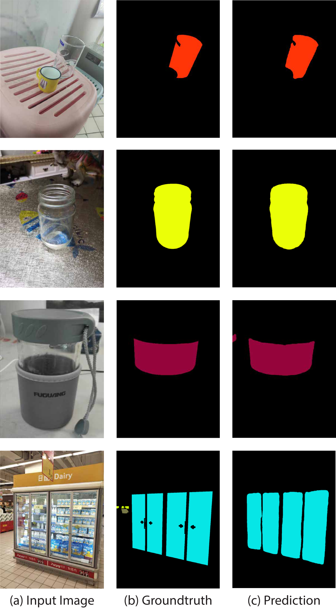

Transparent surfaces have no appearance of their own. We reframe their segmentation as a dual-anomaly detection problem and detect the attenuation–reflection signature at every backbone scale, before fusion.
A single architecture, switching only the loss variant, reaches the best published numbers on a 12-class benchmark and on both binary glass and mirror benchmarks.
Transparent and reflective surfaces take their color from the background scene through two simultaneous effects: attenuation via refraction and a partial reflection from the foreground. We frame transparent object semantic segmentation as a dual-anomaly detection problem and propose Multi-Layer Feature Decomposition (MLFD): an operator that estimates a learned local context, sign-splits the residual against the input into attenuation-like and reflection-like channels, and emits a co-occurrence-gated residual amplifier with the multiplier bounded in [1, 2] — so MLFD only amplifies, never suppresses. The architectural contribution is to apply MLFD per stage at every backbone scale, at native channel widths, before the feature pyramid fuses scales, so per-scale transparency cues survive aggregation.
Glass attenuates the background and overlays a reflection at the same time. Opaque surfaces do neither. The co-occurrence of both effects uniquely identifies a transparent or reflective surface in feature space.
MLFD sign-splits the residual of a feature against a learned local context, then gates the two rectified channels by their co-occurrence. It can only strengthen evidence where the dual anomaly fires; opaque regions pass through untouched.

Contour-level refraction lives at fine strides; large-area reflective overlays live at coarse strides. Post-fusion designs mix these away. MulFD-Net runs an independent MLFD at each PVTv2 stage at its native width, before the feature pyramid fuses scales, so each scale keeps its own transparency cues.

Recasts the task around two perceptual signatures — attenuation and reflection — that co-occur only on transparent and reflective surfaces.
A sign-preserving residual decomposition coupled to a co-occurrence-gated bounded amplifier, not a generic attention block.
Deployed at every backbone stage at native channel widths, preserving scale-specific cues that post-fusion designs permanently mix.
The same model, with only the binary loss variant, reaches the best published numbers on glass (GDD) and mirror (MSD) benchmarks.
On Trans10K-v2, MulFD-Net beats the matched-backbone TransCues entry at every PVTv2 size from B1 to B5, and from B3 onward does so with fewer total parameters.
| Method (PVTv2) | Params | mIoU | Δ |
|---|---|---|---|
| TransCues-B1 | 14.87M | 77.05 | — |
| MulFD-Net-B1 | 17.34M | 79.13 | +2.08 |
| TransCues-B3 | 51.21M | 80.04 | — |
| MulFD-Net-B3 | 48.57M | 82.42 | +2.38 |
| TransCues-B5 | 106.19M | 81.37 | — |
| MulFD-Net-B5 | 85.29M | 84.22 | +2.85 |
Single-scale 768×768 inference, no TTA, matched protocol. Full B1–B5 table in the paper.


| Cross-dataset · B3 | IoU | MAE↓ | Fβ↑ | BER↓ |
|---|---|---|---|---|
| GDD — prev. best | 88.72 | 0.055 | 0.940 | 5.36 |
| GDD — MulFD-Net | 90.10 | 0.051 | 0.942 | 4.84 |
| MSD — prev. best | 91.04 | 0.028 | 0.953 | — |
| MSD — MulFD-Net | 93.06 | 0.019 | 0.968 | 7.12 |
Same architecture, only the loss variant switched to binary. Best on every metric on both benchmarks.
@article{mulfdnet2026,
title = {MulFD-Net: Per-Scale Multi-Layer Feature Decomposition for
Transparent and Reflective Object Segmentation},
author = {Kong, Vungsovanreach and Kim, Tae-Kyung},
journal = {IEEE Access},
year = {2026}
}